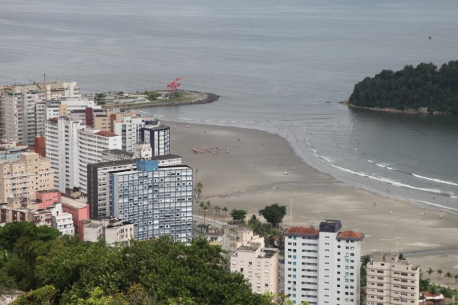

Santos
Cidade da Saudade
Santos é uma das cidades mais antigas do Brasil, portanto histórica, mas também cosmopolita, portuária e ecológica. Seu povoamento começou por volta de 1540 e o passado deixou legados preciosos em casarões, museus e igrejas, destacando-se a Bolsa Oficial do Café, marco da riqueza da cidade. Santos abriga o maior complexo portuário da América Latina, construção no início do século XX, fase de grande progresso como escoradouro de café..
As 5 melhores praias de Santos de acordo com o Tripadvisor
1-Praia do Gonzaga

A Praia do Gonzaga, em Santos, é um ponto de encontro animado onde o calçadão movimentado se encontra com a faixa de areia dourada e o mar sereno. Com uma variedade de quiosques, bares e lojas à beira-mar, é o local perfeito para caminhadas à tarde, atividades esportivas e relaxamento à beira-mar. Sua atmosfera vibrante e infraestrutura completa fazem dela um destino popular para moradores locais e visitantes em busca de entretenimento à beira-mar.
2-Ponta da Praia
A Ponta da Praia, em Santos, é um encantador bairro costeiro que oferece uma atmosfera tranquila e cênica. Conhecida por suas águas calmas e vista deslumbrante do mar, a região é um refúgio relaxante para os visitantes. O local apresenta o Aquário Municipal, atrações náuticas e restaurantes à beira-mar, proporcionando uma experiência serena e culturalmente rica. A Ponta da Praia é ideal para caminhadas, contemplação e para apreciar o belo pôr do sol sobre o horizonte marítimo.
3-Praia do Embaré
A Praia do Embaré, em Santos, é um refúgio tranquilo à beira-mar, perfeito para momentos de relaxamento e lazer. Com uma ampla faixa de areia e um calçadão pitoresco, é ideal para caminhadas à beira-mar e atividades esportivas. A praia oferece um ambiente acolhedor e é cercada por quiosques e restaurantes que servem iguarias locais. Suas águas calmas e clima agradável a tornam um local atraente para banho e práticas aquáticas. A Praia do Embaré é um destino adorado por moradores e visitantes em busca de tranquilidade à beira do oceano.
4-Praia do Boqueirão
A Praia do Embaré, uma jóia à beira-mar em Santos, oferece um cenário encantador com suas águas calmas e ambiente relaxante. Seu calçadão é adornado com belos mosaicos, perfeito para caminhadas e apreciar a vista. Além disso, é conhecida por seu Jardim da Orla, um espaço arborizado e bem cuidado, ideal para piqueniques e momentos de tranquilidade. Os quiosques locais oferecem petiscos deliciosos, e a praia é favorita entre famílias e praticantes de esportes aquáticos, graças à sua atmosfera acolhedora e águas convidativas.
5-Praia do José Menino
A Praia do José Menino, em Santos, é um destino à beira-mar que combina beleza natural com atividades variadas. Seu amplo calçadão é ideal para caminhadas e contemplação do mar, enquanto a faixa de areia atrai banhistas em busca de momentos relaxantes. O que a torna especial é o Orquidário Municipal, um espaço verde exuberante que oferece uma experiência única de natureza. A praia também é um local popular para esportes náuticos, como surf e stand-up paddle, proporcionando diversão para diferentes públicos. Com sua atmosfera acolhedora, a Praia do José Menino é um ponto de encontro cativante à beira-mar.